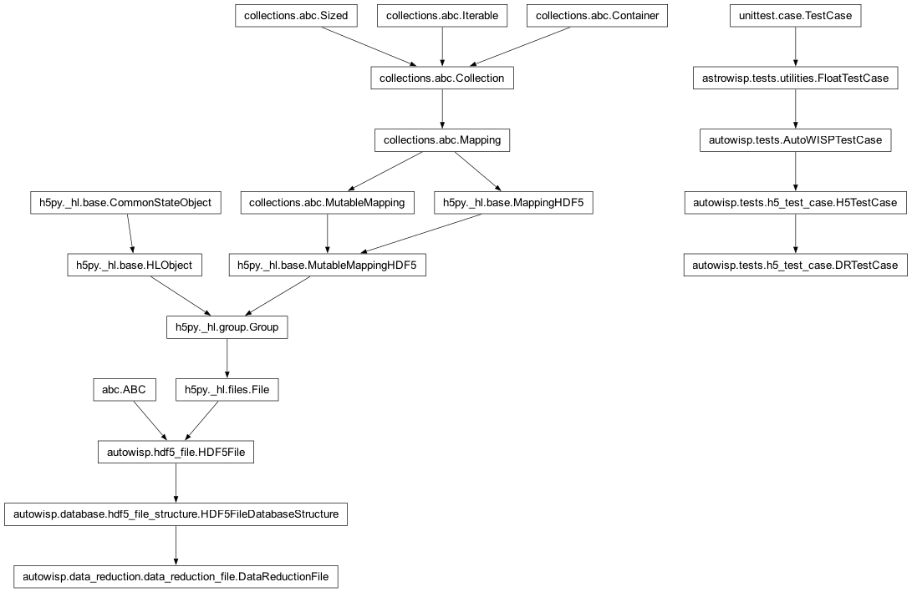
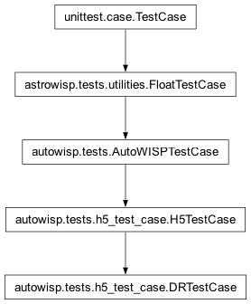
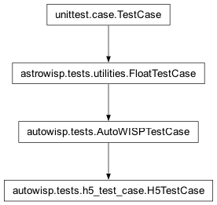

autowisp.tests.h5_test_case module
Class Inheritance Diagram

Define class to compare groups in DR files.
- class autowisp.tests.h5_test_case.DRTestCase(methodName='runTest')[source]
Bases:
H5TestCase
H5TestCase aware of row-order ambiguity in SourceExtraction groups.
- _build_srcextract_reorder(dr_fname1, dr_fname2, group_name)[source]
Return permutation aligning dr_fname2 sources with dr_fname1.
- class autowisp.tests.h5_test_case.H5TestCase(methodName='runTest')[source]
Bases:
AutoWISPTestCase
Add assert for comparing groups in HDF5 files.
- _project_relative(dr_fname, value)[source]
Return
valueas a path relative to whichever project_homedr_fnamelives in (test_directoryorprocessing_directory).valuemay bebytes(h5py string attrs) orstr; the result is returned asstr. Ifdr_fnamedoes not lie under either project_home the value is returned unchanged.
- assert_groups_match(dr_fname1, dr_fname2, group_name, ignore, reorder=None)[source]
Check if two DR files have the same groups.
- Parameters:
reorder (numpy.ndarray or None) – Optional integer permutation applied to dr_fname2 datasets along axis 0 before comparison. Only applied to datasets whose leading dimension equals
len(reorder).
- run_step_test(step_name, inputs, compare, *, ignore=None, output_type='DR')[source]
Run a test of a single step that updates the DR files.
- Parameters:
step_name (str) – The name of the step being tested
inputs ([]) – List of the directories or files needed by the step. The first entry (with full path added) is passed as input to the step.
compare ([]) – List of the HDF5 groups to compare in order to ensure the step produced correct results,
ignore (callable) – Function that returns true on any dataset or group in the HDF5 file that should not be compared when it is under the groups specified in
comparetput_type (str) – The type of output files produced by the step (i.e. whic files should be compared),